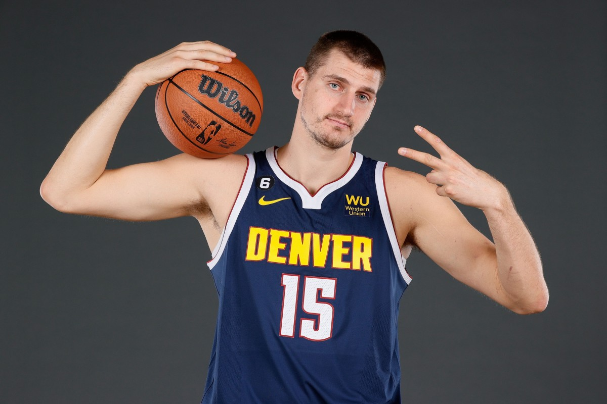
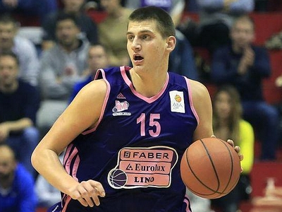

Nikola Jokic


Nikola Jokić is a Serbian professional basketball player who is a center for the Denver Nuggets of the National
Basketball Association. A five-time NBA All-Star, he has been named to the All-NBA Team on five occasions, and
won the NBA Most Valuable Player Award for the 2020–21 and 2021–22 seasons.

Stats
stat bar chart